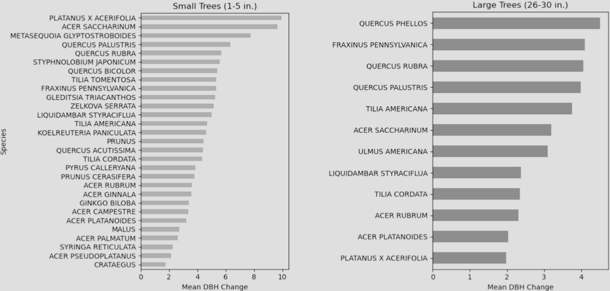

Exploring Tree Growth in NYC
Overview
An analysis of street tree growth across New York City between 2005 and 2015, using two rounds of the NYC Street Tree Census to track diameter change by species and neighborhood. The project addresses the methodological challenge of linking individual trees across datasets that share no common ID.
| Study Area | New York City (all five boroughs) (~780 km²) |
|---|---|
| Role | Solo project |
| Organization | Hunter College — GTECH 731 Geocomputation |
| Status | Completed |
Methods & Tools
Data Sources
NYC Street Tree Census 2005(NYC Open Data) - tree dataNYC Street Tree Census 2015(NYC Open Data) - tree data202 Neighborhood Tabulation Areas(NYC Open Data) - boundaries for summary statistics
Processing Steps
Year labeling & concatenation— Added ayearcolumn to each census dataset (2005 & 2015) and concatenated them into a single GeoDataFrame.Tree ID creation— Generated atree_idfor every unique BBL (Borough Block Lot Location ID) + Latin species combination, treating trees at the same address with the same species as the same individual across years.Duplicate removal— Identified and dropped any BBL–species pair that appeared more than once within a single census year to avoid false matches.Joining & DBH change calculation— Performed an inner join ontree_idbetween the 2005 and 2015 datasets to produce a matched pair table, then computeddbh_change(diameter at breast height difference) for each tree.Spatial aggregation— Joined matched trees to NTA (Neighborhood Tabulation Area) boundaries and computed mean DBH change per neighborhood for mapping.
Tools Used
| Tool | Purpose |
|---|---|
| Python / pandas | Data cleaning, ID generation, duplicate removal |
| GeoPandas | Spatial joins, CRS management, shapefile I/O |
| Matplotlib | Bar charts of mean DBH change by species |
| Cartopy / contextily | Choropleth maps of growth by neighborhood |
| QGIS | Visual QA of tree point overlaps between census years |

Key Findings
London Planetree (*Platanus × acerifolia*)showed the highest mean DBH change among small trees (1–5 in. starting diameter), followed closely bySugar Maple (*Acer saccharinum*)andDawn Redwood (*Metasequoia glyptostroboides*).- Among large trees (26–30 in. starting diameter),
Willow Oak (*Quercus phellos*)led growth, withGreen Ash (*Fraxinus pennsylvanica*)andRed Oak (*Quercus rubra*)also ranking near the top. - Spatially, small-tree growth was highest in scattered neighborhoods across the Bronx and Queens, while large-tree growth showed a more varied pattern with hotspots in parts of Staten Island and northern Manhattan.
- Linking trees across census years required a novel BBL + species matching approach; after removing duplicates, the final matched dataset contained
~101,837 tree pairsspanning 2005–2015.